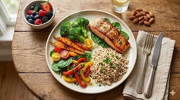
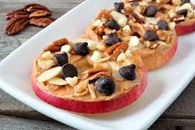

Building a Balanced Meal
A balanced meal includes a great mix of protein, healthy carbohydrates, and plenty of colorful vegetables.

A balanced meal includes a great mix of protein, healthy carbohydrates, and plenty of colorful vegetables.

Skip the sugary treats and reach for nuts, seeds, or fresh fruit to keep your energy levels steady all day.

Have a nutrition question?
Email our nutrition experts!